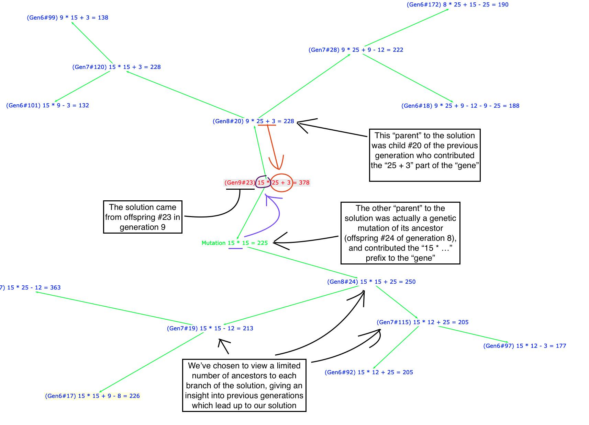

I realized that starting an explanation based on binary might be a step too far, so I wanted to try again using the popular British Countdown numbers game.
Simply put, you randomly choose some target number which you have to reach by some combination of other random input numbers.
The game poses the problem, for example:
"Try to get the number 378 by adding, subtracting, multiplying or dividing some combination of 25, 3, 8, 12, 9 and 15"
You can ask a compute to "brute force" an answer by working through every possible permutation of the input numbers. The problem there, however, is that takes exponential time for every additional input number. That is, a solution could go from taking seconds to minutes, then hours or days as we add more and more potential input numbers.
This sort of problem, however, lends itself to a more elegant and generic solution by modeling nature:
The equation : 5 * 6 + 13 - 12 = 31
Combined with : 9 / 3 - 4 + 6 = 5
If we take the first (arbitrarily) at "5 * 6" and combine it with "- 4 + 6" from the second, we get:
Offspring: 5 * 6 - 4 + 6 = 32
Added to that one final element, which is that we also very occasionally mutate a "gene". For example, perhaps 1% of the time we might change a "+" to a "-", alter the length of the equation, or swap one input number for another.
This approach fits any problem for which we can combine two potential solutions in some way and evaluate the result against some idea of "fittest": chess games, artificial intelligence behavior, financial pricing/trading algorithms, etc.
That is why I find it so compelling -- we can observe what would seem like complex results from simple combinations. When I wrote this (the second time ;-) I hadn't even referenced any documentation -- the concepts are so straight-forward you can just recall them and put the pieces together yourself.
And so, this is an example where you can supply a target number and input numbers and see if it can solve the equation.
In addition, you can provide an explicit 'seed' random value which controls the randomness for all the points in the algorithm:
Also configurable are the maximum number of generations to try before giving up, the maximum population size, the mutation probability (e.g. 0.01 is 1%), as well as the minimum equation size to use for the initial population and maximum nodes to render in the final display.
You can jump to it here.

This is just one example of a genetic algorithms, which have extensively well documented elsewhere.
I've actually even written this before in Java, but I wanted an example which didn't have to start from a binary representation.
I also wanted to have better control over the randomness, expose a javascript version, and just generally try and improve on my first pass.
A massive thanks and credit to some of the libraries/tech I've used. Please feel free to fork and play with the code from github.com/aaronp/countdown